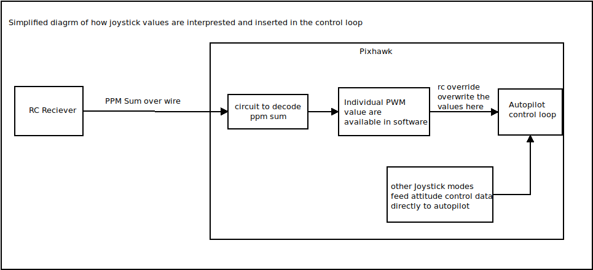

Joystick Options¶
There are quite a few things that has been added to both physical and virtual joystick interface. These additions make it more complete from a hacker/builder perspective but they also make the operation dangerous if you don’t know what you are doing.
RCOverride Support Warning¶
First among them is the infamous RC Override support. It is a powerful feature but also a dangerous one especially when you are dealing with low travel gaming joysticks and virtual joysticks which don’t provide as much tactical feedback. You might feel why do we have it in education offering? Because it allows you to emulate RC transmitter even when you don’t have one. Please be warned you should not use RC Override or Fixed RC override modes unless you have no other way of achieving what you are trying to achieve. You are always better off in normal mode when using physical or virtual joystick. Now that you have been warned, let’s see what it is.
RCOverride reads the endpoints from copter parameters and tries to emulate those PWM values. Basically it allows you to emulate your calibrated RC even when you are using Joystick.
Fixed RC Override doesn’t read from copter parameters, min and max are hard coded at 1020 and 1960 respectively. These are the endpoints where most esc work well and our ESCs are also fixed to these end points. This is when you don’t have an RC at all, but still want to do some operations that require RC. In this case joystick also be calibrated under radio calibration screen.
{kind=link}
Physical Joystick¶
The physical joystick configuration tab appears under vehicle if a joystick is detected. This is pretty much same as upstream QGC with only RC Override support to modes and there is a way to emulate channel 5 onward with joystick buttons. It just adds new PWM values for emulated channel to RC Override message. But again this kind of hacking is only for experimental purposes when you don’t have any other way to achieve that control.
{kind=link}